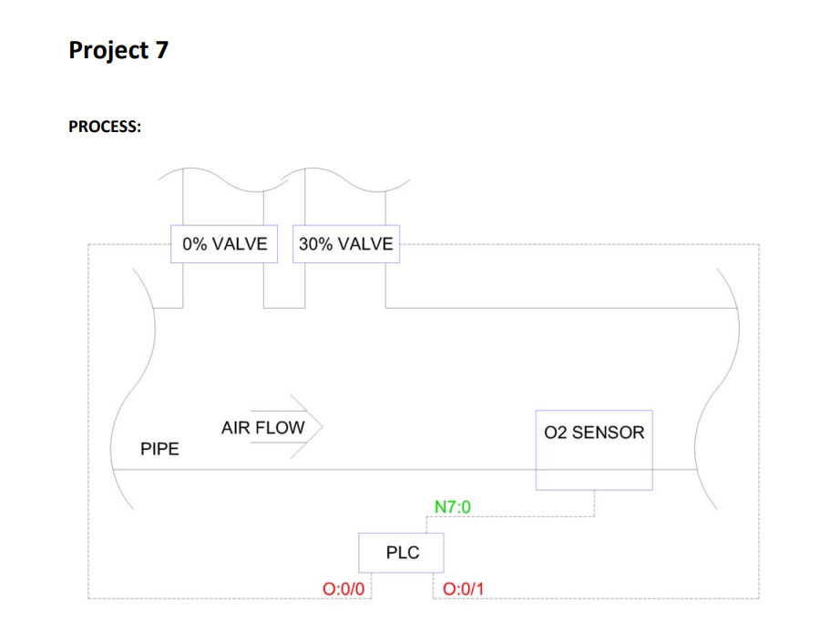
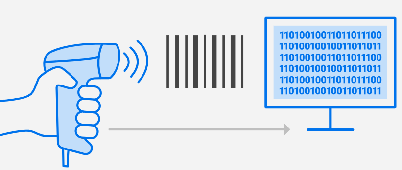

PLC Projects
PLC Pump Control: HOA, Alarms & Cycle Logic (RSLogix 500)
Master complex pump automation with this RSLogix 500, RSLinx, and Emulate 500 project! We'll program a cycling pump system, incorporating essential HOA (Hand-Off-Auto) controls, and crucial alarm logic.
See DetailsPLC Vacuum Control: Custom Logic (No PID)
Design a custom PLC program in RSLogix 500 to maintain a precise vacuum level without using a PID controller. This project demonstrates advanced control logic for industrial applications.
See DetailsPLC Analog Scaling & Calibration (RSLogix 500)
Develop a PLC program in RSLogix 500 to perform analog input scaling and two-point calibration. This project is crucial for accurate sensor data interpretation in industrial applications.
See DetailsPLC Hour Meter (RSLogix 500)
Implement a robust hour meter logic in RSLogix 500 to track equipment runtime, essential for maintenance scheduling and warranty tracking in industrial applications.
See DetailsPLC Digital Flow Meter (RSLogix 500)
Design a PLC program to accurately measure and display flow rate from a digital rotameter using pulse counting and K-factor conversion, crucial for various fluid handling systems.
See DetailsPLC Multi-Position Valve Control (RSLogix 500)
Implement control logic for a multi-position valve using RSLogix 500, managing its movement through various states (Home, Fill, Drain, Flush) and incorporating cycle management with a reset function.
See DetailsPLC Inventory Control (Barcode Scanner Integration)
Develop a PLC program in RSLogix 500 to manage inventory by parsing barcode scanner data, tracking incoming and outgoing quantities of multiple raw materials.
See DetailsPLC Box Filling & Conveyor Control (RSLogix 500)
Develop a PLC program to automate a box-filling station, controlling a conveyor, detecting box types, and dispensing specific products (pecans/walnuts) based on colored labels.
See DetailsPLC Pressure Control (RSLogix 500)

Implement a PLC program in RSLogix 500 to maintain pressure in a receiver using two pressure switches and a pump, including an indicator light for pressure status.
See DetailsHMI Projects
AdvancedHMI Project: Single Screen Filtration System Control
Dive into HMI design with AdvancedHMI in this project! We'll create a single-screen HMI for our water filtering station, focusing on maximizing functionality and visibility while adhering to space constraints. See how to integrate essential controls for the pump and valves, monitor the filter's normal and backwash phases, and build a custom, compact alarm management interface directly on the HMI. This is a great introduction to free HMI software for personal use and understanding core design principles.
See DetailsEasyBuilder HMI: Water Treatment System
Explore a comprehensive Human-Machine Interface developed with EasyBuilder for a complex water treatment plant. This project covers real-time monitoring of filtration and backwash cycles, granular control with Hand-Off-Auto modes, multi-level user authentication, detailed system usage tracking, and dynamic alarm management. Discover how the HMI visualizes process values on a schematic diagram and provides historical trending for operational insights, ensuring efficient and safe plant control.
See DetailsWonderware HMI: Water Treatment System
Explore a comprehensive Human-Machine Interface developed with Wonderware InduSoft Web Studio for a complex water treatment plant. This project covers real-time monitoring of filtration and backwash cycles, granular control with Hand-Off-Auto modes, multi-level user authentication, detailed system usage tracking, and dynamic alarm management. Discover how the HMI visualizes process values on a schematic diagram and provides historical trending for operational insights, ensuring efficient and safe plant control.
See Details